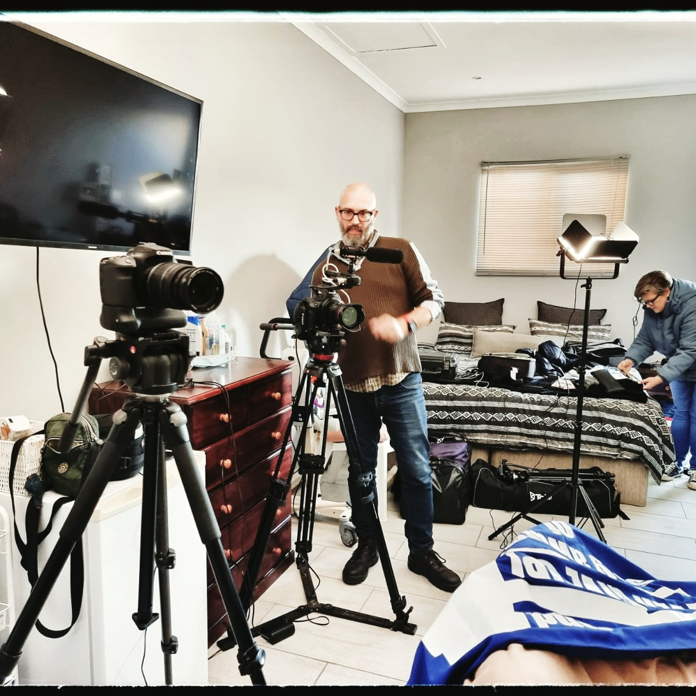

I’m Leon Steenkamp, a multimedia content producer based in Cape Town, specialising in photography, video, and storytelling for organisations, businesses, and individuals.
With over 20 years of experience in journalism, content creation, and communication, I help clients tell their stories clearly and effectively across multiple platforms.
My work combines visual storytelling with strategic thinking. I don’t just create content—I help shape messages that connect with audiences, whether through a photograph, a video, or a full communication campaign.
I’ve worked extensively in media and communications, producing photography, video, written content, and podcasts, while also supporting campaigns aimed at engagement, fundraising, and audience growth.
This background means I understand both the creative and practical side of content—what looks good, and what actually works.
Whether you need professional photography, video production, or ongoing content creation, my focus is always the same: to deliver clear, high-quality work that serves your goals.
Based in Cape Town and available for projects locally and remotely.
I help businesses and organisations create professional visual content that builds trust and engagement.
